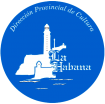
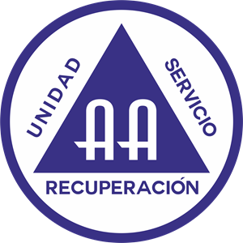
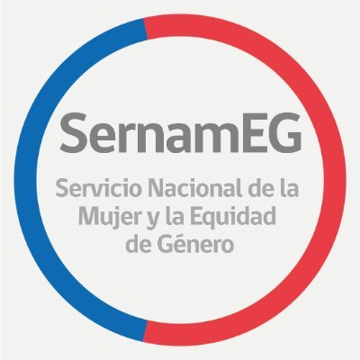

 Diagnóstico organizacional de la Empresa Provincial de Cultura de La Habana,2011
 de orientación sobre adicciones. En Centro de Alcohólicos Anónimos en La Habana, Cuba. 2013
Psicoterapia a pacientes de internación domiciliaria. Empresa: MGI. La Plata, Argentina. 2013
Ministerio del Interior. Buenos Aires, Argentina. 2014
2021- 2022. Investigadora y autora de contenidos, en el proyecto: "Licitación ID: 628-1-LE21 Elaboración, diseño e impresión de manual de relatoría de trabajo con mujeres Programa Mujer y Participación Política". Asesoría realizada por la empresa Epigrama Editora para el Servicio Nacional de la Mujer y la Equidad de Género de Chile.
Ministerio de Educación Provincial. Dirección de Inspección General. 2022